Skeletal system
Classification and naming of bones
Classification based on shape
Based on shape bones can be classified into
- Long bones
- Lengthier bones
- Eg. Femur, humerus, phalanges
- Short bones
- Small and stout bones
- Eg. Carpal bones
- Irregular bones
- Shape is irregular
- Eg. Vertebrae
- Flat bones
- These bones are flat
- Eg. Scapula
- Pneumatic bones
- Bones with air filled cavities
- Eg. Maxilla, frontal bone, sphenoid, mastoid part of temporal bone
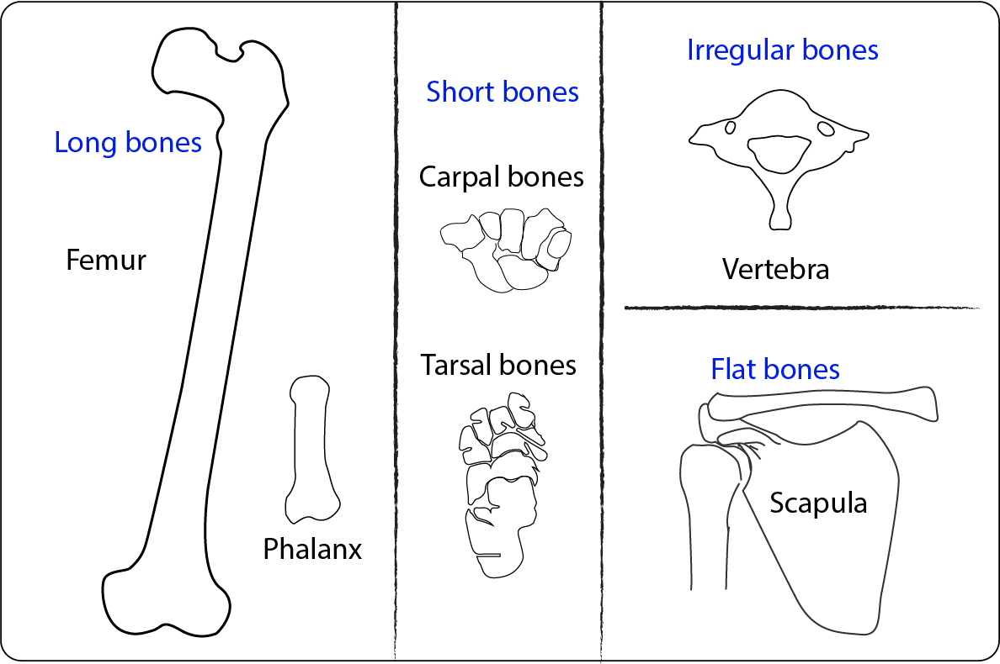
Figure 1: Classification based on shape
Classification based on the microscopic structure
Bones are classified on the basis of macroscopic structure into
Compact bone
- Also called as cortical bone
- Has dense microscopic lamellae
Cancellous bone
- Also called as spongy bone
- Has many irregular spaces in between
Classification of bones based on position
Bones are classified as
Axial bones
- Bones forming the axis of the body
- Eg. Vertebrae, ribs, skull
Appendicular bones
- Bones of limbs
- Eg. Humerus, radius, ulna; Femur, tibia, fibula
Long bones
Characteristics of Long bone
- Length > breadth
- Shaft & 2 ends
- Tubular in shape
- Weight bearing
- Endochondral ossification
- One primary & two secondary ossification centres (usually)
Characteristics of young bone
- Endochondral framework
- Epiphyseal growth plate present
Ossification centers
- Long bones have one primary center forming the diaphysis
- Multiple secondary centers forms parts of epiphysis
Typical long bones
- Eg: Femur, tibia, humerus, radius and ulna
Miniature long bones
- Eg: Phalanges, metacarpals, metatarsals
Modified long bones
- Eg: Clavicle - No medullary cavity
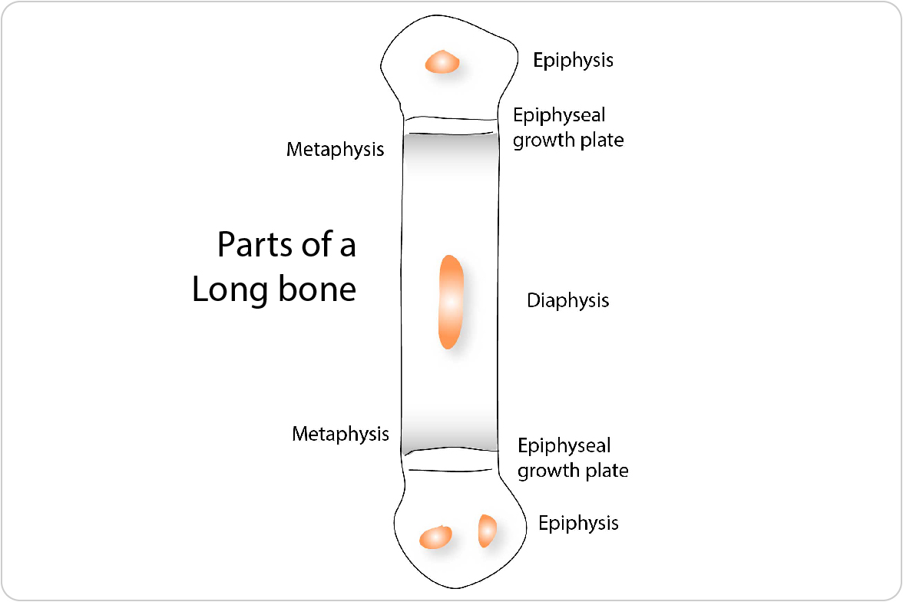
- Diaphysis
- Epiphysis
- Metaphysis
- Epiphyseal plate of cartilage
Diaphysis
- It is the elongated shaft (middle portion) of the bone
- Ossifies from primary center
Epiphysis
The ends of the bone that ossifies from secondary centers
Four types
- Pressure epiphysis
- Traction epiphysis
- Aberrant epiphysis
- Atavistic epiphysis
Metaphysis
- Zones of active bone growth at the ends of the diaphysis
- Metaphysis has rich blood supply
- Common site of osteomyelitis (Inflammation of the bone) in children
- As the arteries make a sharp bend at metaphysis - bacteria or thrombus can easily get trapped in the region - making it more susceptible to inflammation.
- Separates epiphysis and metaphysis
- Proliferation of cells in this region - lengthens the bone
- Growth plate is nourished by both epiphyseal and metaphyseal arteries
Blood supply of long bone
Bone is richly vascular and is supplied by
- Nutrient artery
- Periosteal arteries
- Metaphyseal arteries
- Epiphyseal arteries
Nutrient artery
Passes through the cortical bone in shaft
Runs obliquely in the foramen
Foramen is called – nutrient foramen
Directed away from the growing end
Mnemonic to remember the direction
Towards the elbow I go, away from the knee I flee
No branches in the foramen
Divides into ascending and descending branches
Each branch divides into smaller helical branches - Centripetal branching
Periosteal arteries
- Numerous
- Enter through Volkmann’s canal
- Supply outer third of the cortex
- Enter through enthesis – place of attachment of tendon to bone.
Metaphyseal arteries
- Enter metaphysis directly
Epiphyseal arteries
- Derived from anastomotic circle around the joint – circulus vasculosus
Area of supply
Epiphyseal and metaphyseal arteries supply more area than diaphyseal arteries
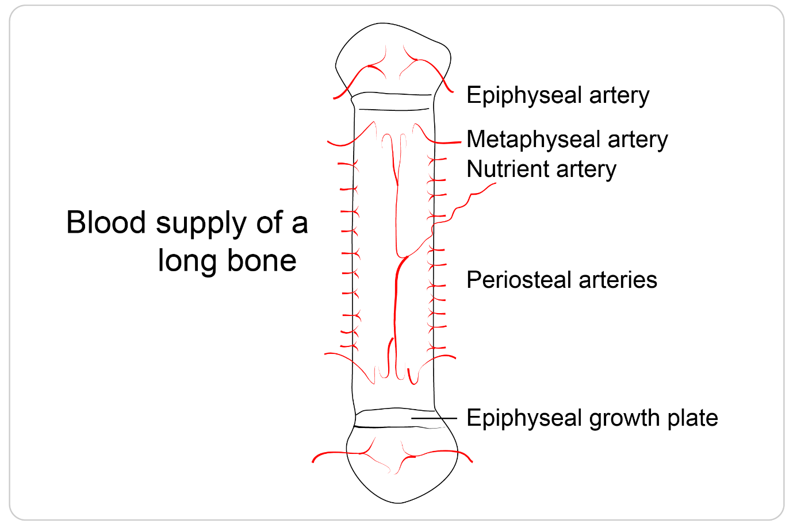
Clinical importance - Epiphyseal growth plate fractures
- Salter - Harris fracture - fracture involving epiphyseal growth plate, particularly zone of provisional calcification
- Type 2 is more common fracture subtype, where the fracture line passes through the growth plate and metaphysis, spares the epiphysis.
Clinical importance - Osteomyelitis
- Metaphysis has rich blood supply
- Metaphysis - Common site of haematogenous osteomyelitis (Inflammation of the bone) in children
- As the arteries make a sharp bend at metaphysis - bacteria or thrombus can easily get trapped in the region - making it more susceptible to inflammation.
Clinical importance - Avascular necrosis
Lack of blood supply to the epiphysis leads to avascular necrosis (AVN)
Head of femur is the most commonly affected bone
Few named (eponymous) avascular necrosis -
- Legg-Calve-Perthes disease - femoral head
- Preiser disease - scaphoid
- Kienbock disease - lunate
- Dias disease - trochlea of the talus
Clinical importance - Osgood-Schlatter disease
- Stress on the epiphyseal growth plate of the upper end of tibia leads to excess bone growth
Endochondral Ossification
How does a cartilage model become a growing bone?
A child’s long bones must provide support while continuing to grow. This is possible because bone formation and cartilage growth occur together in an organised sequence. Cartilage establishes the early framework and provides a continuing growth mechanism; bone progressively replaces it.
Definition: Endochondral ossification is the formation of bone through the progressive replacement of a pre-existing cartilage model. It contributes to the development of most bones of the skeleton, including the long bones of the limbs.
The cartilage matrix becomes calcified during the process, but calcified cartilage and bone are different tissues. Osteoblasts deposit new bone matrix on a temporary framework of calcified cartilage.
The cartilage model
- Development begins when mesenchymal cells collect at the site of the future bone.
- These cells differentiate into cartilage-forming cells and produce a model of hyaline cartilage.
- The model resembles the general shape of the future bone.
- The cartilage is surrounded by
- perichondrium, a connective tissue covering containing cells capable of further differentiation.
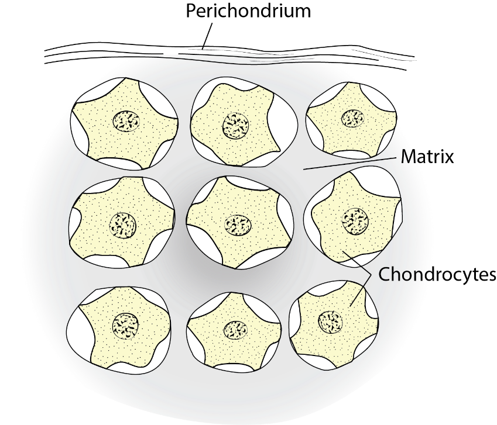
Figure : The early cartilage model
At this stage, the model grows through cartilage formation. Chondrocytes divide within the matrix, while cells at the surface contribute additional cartilage.
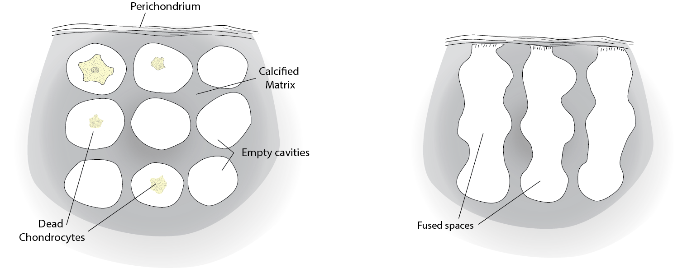
Figure : Changes in the cartilage model
Changes in the centre of the model
The earliest major changes occur around the future shaft, or diaphysis.
Chondrocyte hypertrophy → matrix calcification → loss of many chondrocytes → invasion and replacement by bone.
Formation of the bone collar
While changes occur inside the cartilage model, cells in the surrounding perichondrium differentiate into osteoblasts.
These osteoblasts deposit osteoid, the unmineralised organic matrix of bone. Mineralisation of this matrix produces a thin bone collar around the shaft.
The collar forms directly within connective tissue, without an intervening cartilage stage. Its formation is therefore an example of intramembranous ossification occurring during the development of a bone that otherwise develops predominantly through endochondral ossification.
The connective tissue covering now acquires the characteristics of periosteum.
The distinction matters:
- Bone collar: the newly formed layer of bone.
- Periosteum: the connective tissue covering outside that bone.
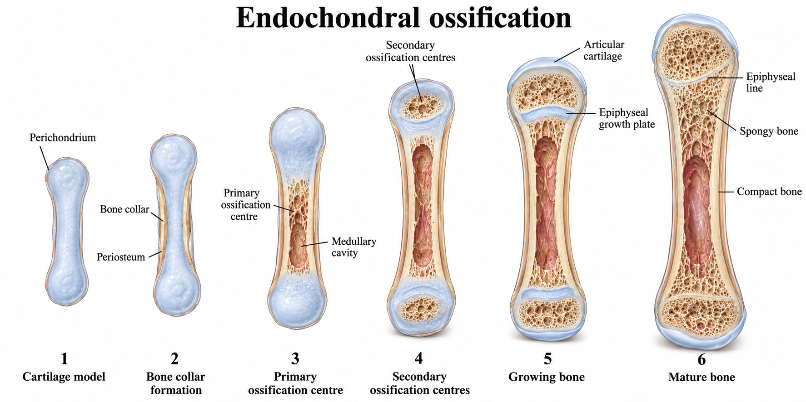
Figure: Bone collar and central cartilage changes
Vascular invasion and the primary ossification centre
Blood vessels penetrate the developing collar and enter the altered cartilage.
The invading vascular tissue is traditionally described as the periosteal bud or osteogenic bud. It brings blood vessels, osteoprogenitor cells, and cells involved in the developing marrow and tissue-resorption processes.
Osteoprogenitor cells differentiate into osteoblasts. Mature osteocytes are not transported into the model to begin bone formation; osteocytes develop when osteoblasts become enclosed within the matrix they produce.
The region in the diaphysis where bone formation begins is the primary ossification centre.
Osteoblasts deposit osteoid on surviving spicules of calcified cartilage. The early trabeculae therefore contain a cartilage core covered by newly deposited bone.
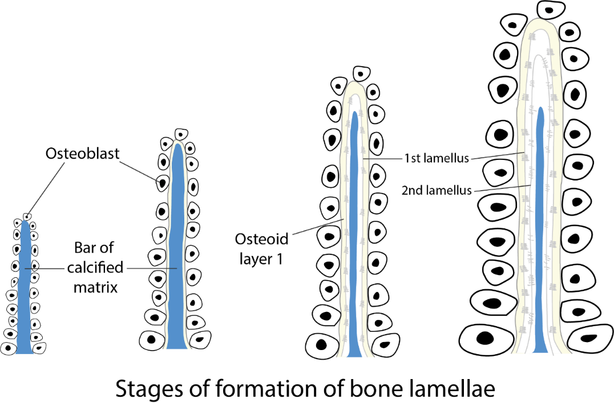
Figure: Osteoblasts deposit bone on remnants of calcified cartilage following vascular invasion
Formation of the medullary cavity
Resorptive cells remove portions of the calcified cartilage and newly formed trabeculae. Spaces enlarge and join, contributing to the development of the medullary cavity.
The initial bone is remodelled into more organised lamellar bone. Remodelling requires both resorption by osteoclasts and formation by osteoblasts; it cannot be attributed to osteoclasts alone.
Ossification extends from the central shaft towards both ends of the developing bone.
Secondary ossification centres
The ends of the developing long bone are the epiphyses.
Secondary ossification centres appear within these cartilaginous ends. Their timing varies between bones: many appear after birth, while some are present before birth.
Vascular invasion and bone deposition occur within the epiphyseal cartilage. The developing epiphysis retains predominantly trabecular architecture rather than acquiring a shaft-like medullary cavity.
Two important regions of cartilage remain:
- Articular cartilage, covering the joint surface.
- Epiphyseal growth plate, between the epiphysis and metaphysis.
The articular cartilage provides a specialised joint surface. The growth plate supports continued longitudinal growth.
The epiphyseal plate, also called the physis or growth plate, is a specialised region of cartilage between the epiphysis and metaphysis.
Length increases because cartilage is continually produced and enlarged within the plate and then replaced by bone on its metaphyseal side.
This process moves the epiphysis progressively away from the shaft.
The plate is a dynamic structure. Its continued presence depends on the relationship between cartilage production and cartilage replacement.
From the epiphysis towards the metaphysis, the changes can be understood in five regions.
Region | Main appearance or event | Significance |
Resting cartilage | Small chondrocytes within relatively abundant matrix | Provides a reserve population and supports plate organisation |
Proliferation | Dividing chondrocytes arranged in longitudinal columns | Produces additional cartilage |
Hypertrophy | Chondrocytes and their lacunae enlarge | Contributes substantially to longitudinal growth |
Provisional calcification | Thin cartilage septa become mineralised | Creates the temporary framework at the replacement front |
Ossification | Vessels invade and osteoblasts deposit bone on cartilage remnants | Adds new bone on the metaphyseal side |
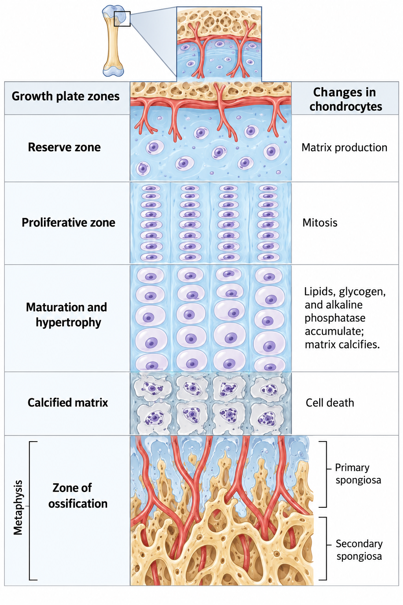
Figure: Growth plate diagram - The growth plate displays a spatial sequence of cartilage production, enlargement, calcification, and replacement by bone
Ref: Ağırdil Y. The growth plate: a physiologic overview. EFORT Open Rev. 2020 Sep 10;5(8):498-507. doi: 10.1302/2058-5241.5.190088. PMID: 32953135; PMCID: PMC7484711.
Growth-plate closure
Towards skeletal maturity, growth-plate activity declines. Eventually, the remaining cartilage is replaced by bone, establishing continuity between epiphysis and metaphysis.
This is epiphyseal fusion or growth-plate closure. An epiphyseal line may remain visible.
After closure, that growth plate can no longer contribute to longitudinal growth. The bone remains living tissue and continues to remodel.
The timing of closure varies with the particular bone, hormonal influences, and individual development. A single age should not be applied to all growth plates.
Length and thickness increase by different mechanisms
Longitudinal growth depends on the growth plate.
Growth in thickness occurs through appositional bone deposition, particularly at the periosteal surface. Associated resorption and formation reshape the bone and its internal cavity.
Consequently, endochondral development includes several coordinated processes:
- Cartilage growth.
- Replacement of cartilage by bone.
- Direct bone deposition at surfaces.
- Resorption and architectural reorganisation.
Growth-plate injury
An injury crossing the growth plate may disturb its organisation or lead to a bridge of bone across part of the plate.
If growth stops across the whole plate, the affected bone may become relatively short. If growth stops on one side while continuing on the other, angular deformity may develop.
Vitamin C is required for normal collagen formation. Severe deficiency causes scurvy and impairs connective tissue integrity
The growth plate itself is avascular cartilage.
The vascular arrangement favours bacterial localisation. Infection can damage adjacent growth structures. Vascular relationships also change with age.
The traditional account describes hypertrophic chondrocytes dying before bone replaces the cartilage. It does not mean that the entire cartilage matrix becomes bone without replacement.
Ref: Yang L, Tsang KY, Tang HC, Chan D, Cheah KS. Hypertrophic chondrocytes can become osteoblasts and osteocytes in endochondral bone formation. Proc Natl Acad Sci U S A. 2014 Aug 19;111(33):12097-102. doi: 10.1073/pnas.1302703111. Epub 2014 Aug 4. PMID: 25092332; PMCID: PMC4143064.
Key points to remember
- Endochondral ossification uses a cartilage model.
- Calcified cartilage provides a temporary scaffold for new bone.
- The bone collar forms by intramembranous ossification.
- The periosteum and bone collar are separate structures.
- Primary ossification begins in the shaft; secondary centres develop in the epiphyses.
- The growth plate permits longitudinal growth until closure.
- Bone growth and remodelling require coordinated formation and resorption.
Intramembranous ossification
Definition: Intramembranous ossification is the direct formation of bone within ‘membranes’ of condensed primitive mesenchyme
Salient features:
- Bone is formed within highly vascular membranes
- Bones of cranial vault form by this process
- Gaps in membranous bones of cranial vault allow moulding. Moulding is adaptation of fetal head to pressure in birth canal.
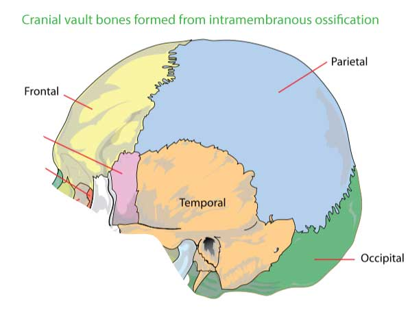
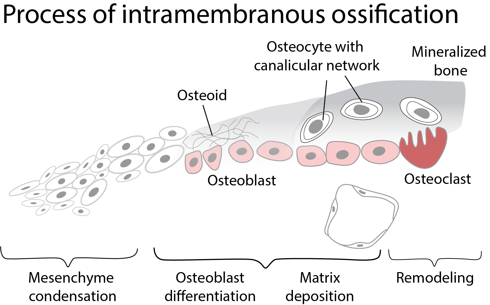
Process of intramembranous ossification
- During embryonic development – mesenchymal cells condense as a membrane
- At the centres of ossification, mesenchymal stem cells differentiate into osteoprogenitor cells
- These cells proliferate around blood capillaries
- Osteoprogenitor cells differentiate to osteocytes and later osteoblasts
- This results in osteoblasts arranged in incomplete layers
- Primitive bone matrix forms around these cells
- Earliest ossification in the form of crystals appear in association with extracellular matrix vesicles
- This produces early labyrinthine woven bone
- Many layers of calcifying matrix will be added to this structure
- Such layers with osteoblasts forms trabeculae of varying thickness
- Mesenchyme on the outer aspect condense and form periosteum
- Collagen fibres of the matrix, secreted on the walls of the narrowing spaces between trabeculae, become organized as parallel, longitudinal or spiral bundles, and the cells they enclose occupy concentric sequential rows
- This structure have a central canal, and are called primary osteons
- Later they are eroded and together with intervening woven bone, and replaced by generations of secondary osteons
- Modelling of the growing bone is achieved by varying rates of resorption and deposition at different sites
Bones formed through intramembranous ossification
- Bones that constitute cranial vault
- Frontal bone
- Occipital bone
- Parietal bone
- Bones of viscerocranium
- Mandible
- Maxillary bone
- Zygomatic bone
- Squamous part of temporal bone
- Clavicle
- Deposition of bone on outer surface of long bones
Applied aspects
- Fracture healing
Histologic characterization of fracture healing shows that intramembranous ossification occurs under the periosteum within a few days after an injury.
- Craniosynostosis
Abnormal closure of sutures between membranous bones of cranial vault results in craniosynostosis.
Epiphysis
Definition: Ends of the long bone formed from separate ossification centers are epiphysis
Cartilaginous extremity at the epiphysis ossify after birth forming secondary center
Features
- Usually - long bones have one or multiple epiphyseal centers at each end
- Short long bones have one epiphysis (eg: phalanges, metacarpals have one epiphysis)
- Articular surfaces of epiphysis are covered with hyaline articular cartilage
Types of epiphyses
- Pressure epiphysis
- Traction epiphysis
- Atavistic epiphysis
- Aberrant epiphysis
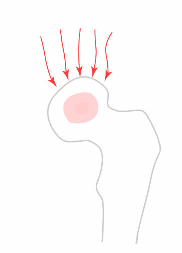
Pressure epiphysis
- Transmits body weight
- Formed at the articulating ends of the long bones
Eg: head of femur, upper end of humerus.
Traction epiphysis
- Formed by pull of muscles or tendon
Eg: trochanters of femur, tubercles of humerus
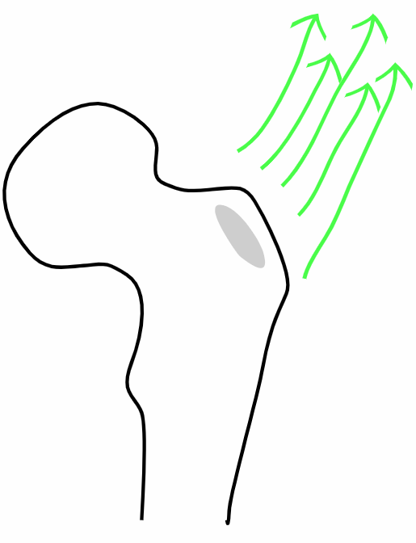
Atavistic epiphysis
- Independent bones of the lower animals are fused to nearby bones in mammals
- Grows like parasite
Eg: Coracoid process of scapula, os trigonum of talus
Etymology: relating to or characterized by reversion to something ancient or ancestral
Coracoid process of scapula
- Atavistic epiphysis
- Hook shaped projection from the upper aspect of scapula
- Separate bone of shoulder girdle in birds and other lower animals
- Etymology: coracoid - like raven's beak
Attachments
Muscles
- To the tip - combined attachment of short of biceps brachii and coracobrachialis
- To medial aspect - pectoralis minor
Ligaments
- Coracoclavicular, coracohumeral, coracoacromial, and transverse scapular ligaments
Clinical importance
- Coracoid process - considered as lighthouse of shoulder
- Because it is very close to major neurovascular structures - including brachial plexus, axillary artery and vein
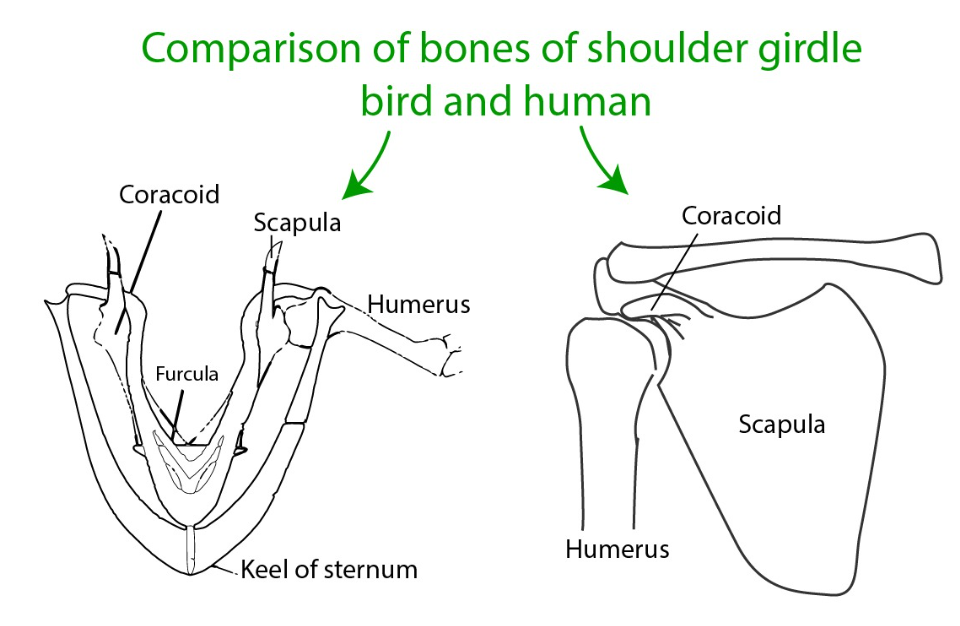
Aberrant epiphysis
- Deviations from the normal
- Not always present
Eg: epiphysis at the head of first metacarpal & at the base of other metacarpal bones
Clinical importance
- Avascular necrosis
- Lack of blood supply to the epiphysis leads to avascular necrosis (AVN)
- Head of femur is the most commonly affected bone
- Osteochondritis dissecans
- Deprivation of blood supply in the subchondral bone leads to osteochondritis dissecans
- Loose fragments of cartilage and bone are found within a joint
- Slipped Capital Femoral Epiphysis (SCFE)
- A condition where the femoral metaphysis slips relative to the epiphysis leading to varus relation between the head and the neck
Law of ossification
In the simplest form - the law can be stated as
The centres that appear first, fuse last
More specifically -
The epiphysis that appears first will fuse with the diaphysis last
Clearly the law can be stated as -
The secondary centers appearing first fuses with the primary center last
All three sentences mean the same
Exception
Lower end of fibula - secondary center appears first and fuses first
Fibula
- Epiphysis of the upper end of fibula (traction epiphysis) appears by 3-4 years and fuses with the shaft by 17-19 years
- Epiphysis of the lower end of fibula appears by 1 year and fuses with the shaft by 15-17 years
Reason
Proximal epiphysis of fibula (traction epiphysis) do not form until 2 years
Possible explanations are
- As the proximal end of fibula is bound to growing end of tibia, delay in appearance of proximal end may be explained.
- Early walking by infant may influence the formation of distal epiphysis earlier
- Early distal ossification may be a continuation process of rapid perinatal growth of lower end
Or pattern of ossification of the human fibula is a widespread mammalian characteristic. This may not be related to any special features of the human skeleton.
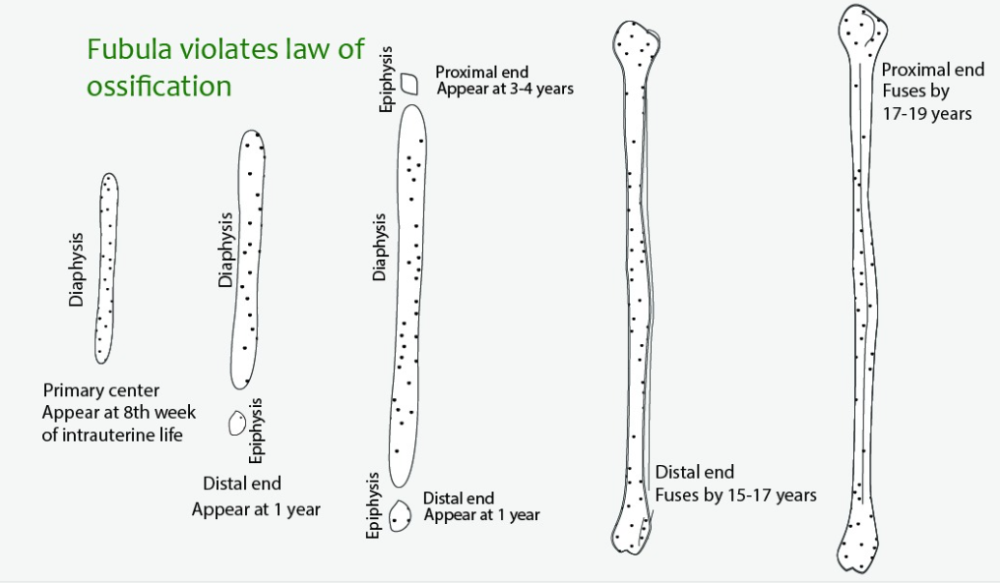
Sesamoid bones and accessory bones
Definition:
- Small sesame seed like bones
- Develop in the tendon of the muscles crossing the joint
- Acts as leverage to redirecting the contractile vectors crossing a joint
Examples
Patella in tendon of quadriceps femoris is the largest sesamoid bone
Fabella in the tendon of head of gastrocnemius
Sesamoid bones are present in tendons of flexor hallucis brevis
Pisiform in the tendon of flexor carpi ulnaris
Sesamoid bones are present in tendons of flexor pollicis brevis and adductor pollicis
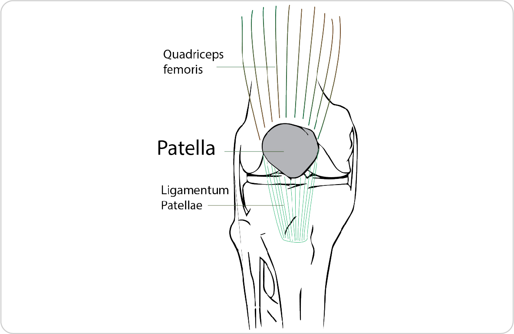
Features of sesamoid bones
- Not completely ossified
- Lack medullary cavity
- Ossification begins late in life
- Patella ossifies from several centers
Functions
- Modify the direction of force / pull of the muscles
- Reduce friction
- Maintains local circulation around a joint against pressure points
Applied aspects
- Fracture of patella to be treated by Wiring
- Sesamoid bones in foot can undergo subluxation, dislocation or fractures
- Small sesamoid bones in hand and foot can be misleading while evaluating fractures nearby bones
- Chronic stress fractures of the sesamoids, most commonly seen in long-distance runners and ballet dancers
Sesamoid bones of upper limb
1. Pisiform bone - flexor carpi ulnaris
2. Sesamoid bone in adductor pollicis
3. Sesamoid bone in flexor pollicis brevis
Sesamoid bones of lower limb
1. Patella - quadriceps femoris
2. Fabella - lateral head of gastrocnemius
3. Two sesamoid bones within two tendons of flexor hallucis brevis
4. Sesamoid bone within the popliteus tendon
5. Sesamoid bones may be present within the long tendons related to head of second and third metatarsals
6. Sesamoid bone at head of fifth metatarsal bone
7. Sesamoid of the interphalangeal (IP) joint of the great toe
Accessory bones or supernumerary bones
These are the bones that are not normally present, but can be found as variant in some individuals
While interpretting X-rays, possibility of accessory bones to be considered to avoid misdiagnosis of fracture
Os trigonum
- Represents the lateral tubercle of the posterior process of the talus bone that failed to fuse
- Present in ~7 to 25% normal individuals
Other accessory bones
In foot and ankle
1. Os perneum
2. Accessory navicular
3. Os calcaneus secundarium
4. Os intermetatarseum
In hand and wrist
1. Os ulnostyloideum
2. Os centrale
3. Os trapezium secundarium
4. Os styloideum